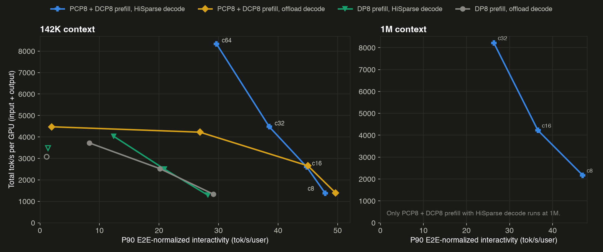
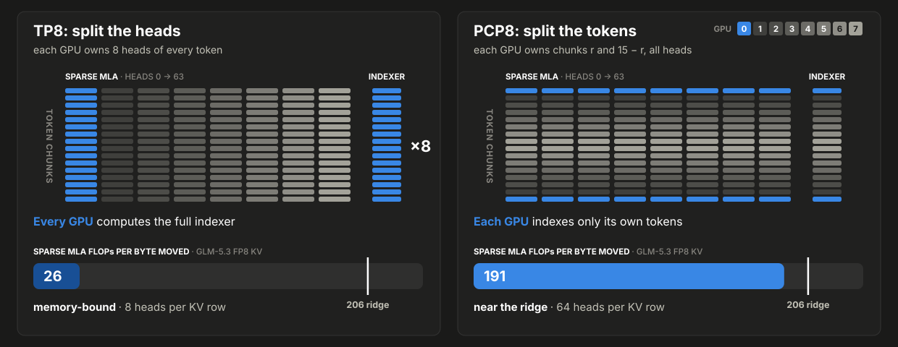
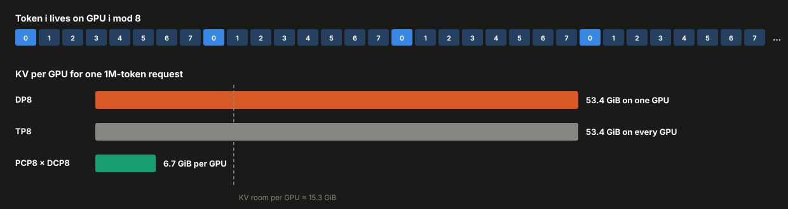
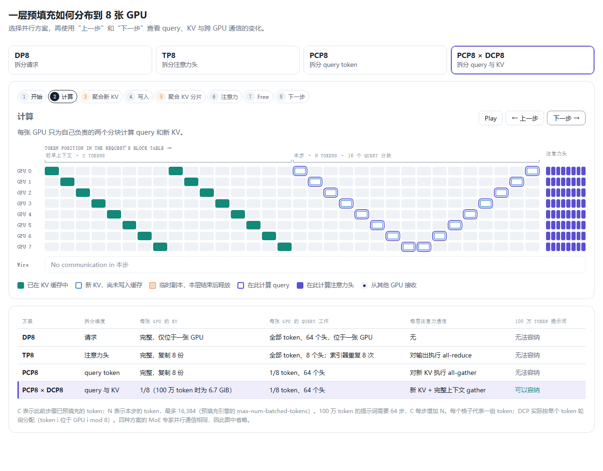
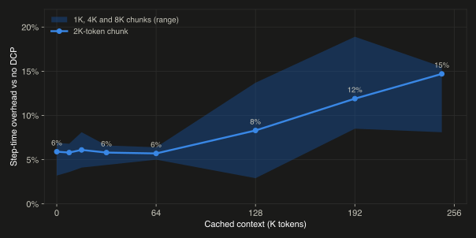
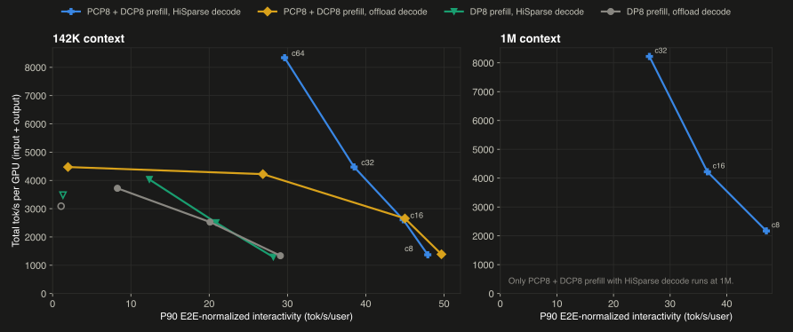

要点速览： 长上下文智能体负载会让 GLM-5.3 在 H200 上同时触及两项限制：KV 缓存容量和预填充速度。我们用 16 张 H200 解决了这两个问题，其中一个节点负责预填充，另一个节点负责解码：
- **预填充上下文并行（Prefill Context Parallelism，PCP）**按 token 而不是按注意力头把每个提示词拆分到多张 GPU。对于 GLM-5.3 的稀疏注意力，这比张量并行更合适。
- **解码上下文并行（Decode Context Parallelism，DCP）**按 token 对预填充引擎的 KV 缓存分片，让 100 万 token 的上下文可以装入预填充节点。
- **混合 HiSparse（Hybrid HiSparse）**让解码端把 KV 保存在主机内存中，因此可以容纳 100 万 token 的请求。
- 在 AgentX 基准上，PCP8 × DCP8 预填充配合混合 HiSparse 解码，在相同吞吐量下达到数据并行部署 1.7～3.2 倍的单用户速度；它也是测试中唯一能服务 100 万 token 上下文的配置。
在内存受限的部署中服务长上下文
智能体工作负载的上下文很长，而且会随着每一轮交互继续增长，这会同时给 GPU 内存和预填充带来压力。在 H200 上，GLM-5.3 的权重占用了每张 GPU 的大部分显存，留给长上下文 KV 缓存的空间很少。每一轮又会向预填充加入更多工具输出和文件内容，因此在高负载下，预填充引擎可能成为整个部署的瓶颈。
第一部分介绍了混合 HiSparse 如何让长上下文装入单个 8× H200 节点上的聚合式部署。预填充/解码分离（P/D disaggregation）还需要更多工作。在预填充节点上，我们使用 PCP，沿提示词的 token 维度并行处理，以加速长提示词。但 MLA 会让每个 PCP rank 持有一份完整 KV 缓存，因此我们再结合 DCP 消除这种复制。在解码节点上，混合 HiSparse 使长上下文能够以更高并发运行。vLLM 新的模块化核心 Model Runner V2 让这些功能更容易组合。
为什么不使用 TP 或 DP？
在一个 8× H200 节点上运行 GLM-5.3 预填充，常见方式有 DP8 和 TP8：
- DP8 把每个提示词分配给单张 GPU，因此该请求的注意力计算无法利用其余七张 GPU。这会限制长提示词的首 token 时间（TTFT），而且整个提示词的 KV 缓存必须装入这一张 GPU。
- TP8 把注意力头分散到多张 GPU。由于 MLA 的 latent KV 由全部 64 个头共享，每张 GPU 都要保存完整缓存，却只为其中 8 个头读取它。索引器会给此前每个 token 打分，并选出稀疏 MLA 要关注的 2,048 个 token；该索引器完全没有分片，所以它的二次复杂度开销会在每张 GPU 上重复执行。
这两种方案都无法在不让每张参与计算的 GPU 保存完整 KV 的前提下，把单个长提示词的注意力工作分摊到八张 GPU。下面两节分别处理这两个问题：PCP 拆分提示词的 query，DCP 拆分其 KV。
PCP：拆分 token，而不是注意力头
在我们的 8× H200 预填充引擎中，PCP 按 token 把每个提示词分散到八张 GPU：每张 GPU 为提示词的八分之一计算 query，但会处理全部 64 个头。直接切分会导致负载不均。因果注意力中，每个 token 都会关注此前所有 token，因此持有提示词末尾部分的 GPU 会比持有开头部分的 GPU 承担更多工作。
PCP 会把提示词切成 16 个分块并配对：GPU r 负责前部的第 r 块，以及后部的第 15 − r 块，让每张 GPU 都获得相同比例的轻量和重型 token。图 3 把它显示为跨八张 GPU 的 V 形分布。这种负载均衡分片来自论文 Context Parallelism for Scalable Million-Token Inference。最后，每张 GPU 新生成的 KV 会执行 all-gather，使所有 query 仍然能够关注完整上下文。

图 1：在 TP8 和 PCP8 下，一次预填充如何分布到 8 张 GPU；颜色表示各部分所属的 GPU。柱形表示稀疏 MLA 的算术强度，横线表示 H200 在 BF16 下由内存受限转为计算受限的位置。
图 1 对比了两种拆分方式。PCP 同时解决了两个问题：每张 GPU 只为自己负责的 token 运行索引器，因此索引器不再在所有 GPU 上重复，每张 GPU 只承担八分之一；而且从内存读出的每一行 KV 会服务全部 64 个头，而不是 8 个头，使稀疏 MLA 的算术强度从每字节约 26 FLOPs 提升到约 191 FLOPs（见注 1），接近 H200 在 BF16 下进入计算受限区域的每字节 206 FLOPs（见注 2）。
避免重复执行索引器对长预填充最重要。索引器的成本随提示词长度按平方增长，而稀疏 MLA 只线性增长，因为每个 query 固定关注 2,048 个 token。若从头预填充并按 FLOPs 计算，在 TP8 下，提示词约达到 32K token 时，索引器成本就会超过稀疏 MLA；在 PCP8 下，索引器不再由每张 GPU 重复执行，交叉点会推迟到约 256K token。
这些特性让 PCP 非常适合长提示词预填充，但它仍有两项成本。每张 GPU 都保存完整注意力权重，而 MoE 专家继续通过 EP8 分布在八张 GPU 上。此外，由于每层都会 all-gather 新 KV，每张 GPU 最终仍会保存完整 KV 缓存。真正限制上下文长度的是这份重复缓存，而不是计算；DCP 正是为了解决它。
DCP：同时对 KV 缓存分片
一个 100 万 token 的 GLM-5.3 请求需要 53.4 GiB 的 FP8 KV（见注 3），但每张 GPU 只有约 15 GiB 空间可用。解码上下文并行（DCP）通过拆分缓存本身解决这一问题：token 以轮询方式分配给八张 GPU，每张 GPU 只保存每八个 token 中的一个，因此同一请求在每张 GPU 上仅需 6.7 GiB（53.4/8）。图 2 将它与 DP8 和 TP8 进行了比较。

图 2：TP 会复制 MLA 的 latent KV，因此八张 GPU 并没有带来额外 KV 空间；DCP 将其缩小为八分之一。
说明：PCP 拆分 query，DCP 拆分 KV。 这些名称源于各自最初的使用场景。DCP 最初用于解码，此时每个请求只有一个 query token，值得拆分的只有 KV 缓存；PCP 最初用于预填充，此时提示词中的大量 query token 才是主要工作。我们的配置在预填充引擎中同时运行两者。
分片以后，每张 GPU 的 query 所需的大部分 KV 位于其他 GPU。在解码阶段，DCP 会把 query 发往 KV：每张 GPU 在自己的 KV 分片上执行注意力，再通过 log-sum-exp 合并局部结果。在本文的预填充引擎中，方向相反：每一层中，每张 GPU 都通过 all-gather 把分片临时组合成完整上下文副本，为自己负责的 query 计算注意力，然后释放这份副本。只有持久化缓存会真正缩小到八分之一。
图 3 展示了完整过程。可以逐步查看 PCP8 × DCP8 的一层预填充，观察每张 GPU 保存哪些 KV、计算哪些 query，以及哪些数据需要跨互连传输。也可切换到 DP8、TP8 或 PCP8 比较。两种布局并不重合：GPU g 保存每八个 token 中的一个，却负责分块 g 和 15 − g 的 query，因此每层都需要 all-gather。
当前阅读器不支持 iframe 时，展开静态预览

图 3：在各并行方案下，8 张 GPU 上的一层预填充过程。选择一种方案并逐步操作，可查看每张 GPU 计算哪些 query、保留哪些 KV，以及哪些数据会经过互连。
all-gather 并非免费：它在每一层重新发送完整缓存上下文，因此成本会随上下文长度增长。图 4 在同一个 PCP8 节点上，以相同的已缓存上下文运行相同的 2K-token 预填充分块，并分别启用和禁用 DCP8，从而单独测量这项开销。上下文长度在 64K token 以内时，DCP8 每步增加约 6% 开销；到 248K 时增至 15%。这是把 KV 池扩大 8 倍的代价。目前我们正在开发一项优化，将每层的 all-gather 与上一层计算重叠，以降低这项开销。

图 4：在单个 8× H200 PCP8 引擎上，DCP8 处理 2K-token 分块时的每步开销。阴影范围覆盖 1K、4K 和 8K 分块。
上下文超过约 250K token 后，PCP8 本身已无法容纳 KV 缓存；此时 DCP 不再只是额外开销，而是长提示词能够运行的必要条件。PCP8 × DCP8 让预填充引擎同时获得速度和容量。
部署方式
我们在两个 8× H200 节点上采用预填充/解码分离部署。两个引擎都使用 FP8 KV 缓存，并采用带 3 个草稿 token 的 MTP 推测解码（MTP3）：
- **预填充：**一个 PCP8 × DCP8 × EP8 引擎，并配置 512 GiB CPU KV 卸载，使后续轮次可以复用前缀。
- **解码：**八个 DP rank，配合 EP8 和第一部分中的混合 HiSparse（每个 rank 配置 48 GiB 主机池和 16 GiB 卸载空间），因此解码并发上限由主机内存而不是 HBM 决定。
具备前缀感知能力的 llm-d 路由器把每个请求发送到预填充引擎，NIXL 连接器把 KV 缓存传输给一个解码 rank，再由该 rank 流式返回 token。
我们将 PCP8 × DCP8 预填充与 DP8 预填充进行比较。DP8 使用八个配合 EP8 的 DP rank，每个 rank 配置 64 GiB CPU KV 卸载，总量同样为 512 GiB。解码节点则比较混合 HiSparse 与普通 CPU KV 卸载，两者使用相同的 512 GiB 主机内存：HiSparse 配置为 8 × 48 GiB 的 HiSparse 池加 8 × 16 GiB 的卸载空间。所有配置使用相同的 16 张 GPU、主机内存和 vLLM 构建版本。
结果
我们运行了 SemiAnalysis 的 AgentX 基准：重放带前缀复用的 Claude Code 轨迹；每个并发度都启动全新服务器；每次测试持续一小时；MTP3 使用固定为 2.99 的合成接受长度，确保所有配置获得相同的推测加速。吞吐量按每张 GPU 的逻辑 token/s 计算（包括缓存命中的 token）：统计所有 16 张 GPU 上的输入与输出 token，并计入通过前缀缓存复用的输入。交互性采用 AgentX 的 P90 端到端归一化单用户输出 token/s，即图 5 的横轴。

图 5：每个点对应一次在全新部署上运行的并发度测试。142K 上下文测试 c8～c64，1M 上下文测试 c8～c32。标签表示 PCP8 × DCP8 预填充配合 HiSparse 解码时的并发度；其他配置以从右到左的顺序运行相同并发度。空心点不在其所属配置的帕累托前沿上。
在 c32 以内，部署大多受预填充限制，因此预填充引擎带来的差异更大。在两种配置都使用 HiSparse 解码时，PCP8 × DCP8 预填充在相同吞吐量下达到 DP8 1.7～3.2 倍的交互速度，并把中位 TTFT 从 1.5～5.2 秒降至 0.8～0.9 秒。在这一负载下，解码器差异很小：c8 和 c16 时，两种 PCP8 × DCP8 配置只相差几个百分点；c8 时，仅使用卸载的解码配置甚至略快。
从 c32 开始，部署逐渐转为受解码限制，HiSparse 解码开始领先。在 c64 时，它把吞吐量近乎翻倍，达到每张 GPU 8,340 个逻辑 token/s，同时维持每用户 29.6 token/s；其他所有配置都会降到每用户 1～2 token/s。
在 100 万 token 上下文下，两项技术缺一不可：一个 DP8 预填充 rank 无法容纳单个 100 万 token 请求，仅使用卸载的解码 rank 也无法容纳。
让所有功能正确组合
vLLM 中许多最具挑战性的工作都在于让这些功能能够相互组合。每项功能都会改变 KV 缓存的布局、调度或移动方式，而每一种组合都必须保持正确和高效。
对于 P/D 部署，KV 在两个引擎之间需要改变布局。预填充引擎按 token 把每个请求的 KV 分散到八张 GPU；每个解码 rank 则需要完整 KV，包括 MTP 层的 KV，并且要转换成自己的分页布局。NIXL 连接器在两个节点之间完成重新组装，同时还必须保证 CPU 卸载带来的前缀复用继续正常工作。
本文所有配置都运行在 Model Runner V2 上。它把模型特定状态移出公共执行路径，并在没有 CPU–GPU 同步的情况下运行推测解码。混合 HiSparse 也构建在它之上。
尝试运行
所有功能都可在 vLLM v0.32.0 或更高版本运行，可使用镜像 vllm/vllm-openai:v0.32.0。上述结果在 vLLM main 的提交 9e38b4111a 上测得；复现实验 gist固定使用提交 2537629eb2。预填充引擎的关键参数如下：
--prefill-context-parallel-size 8 \
--decode-context-parallel-size 8 \
--dcp-comm-backend ag_rs \
--enable-expert-parallel \
--attention-config '{"sparse_mla_force_mqa":true}'
若不设置 sparse_mla_force_mqa，提示词长度能装入 2,048-token top-k 的预填充批次会走稠密 MHA 路径。该参数会让它们同样使用稀疏 MLA（MQA）内核，使每一行 KV 都服务全部注意力头。
致谢
这项工作由 Roberto L. Castro（Red Hat）、Simon Veitner（Red Hat）、Matthew Bonanni（Red Hat）、Lucas Wilkinson（Red Hat）和 Nicolò Lucchesi（Mistral）完成。感谢 Maroon Ayoub（Red Hat）和 Robert Shaw（Red Hat）对部署进行压力测试、报告错误并修复缺陷。
注释
- 每个 query 的稀疏 MLA 会读取 2,048 行选中的 KV，每行 660 字节：FlashMLA 的
fp8_ds_mla格式包含 656 字节 FP8 KV，另加 4 字节索引，总计约 1.35 MB。每个注意力头的 BF16 query 与输出还会增加 2,176 字节，并对每行执行 2,176 FLOPs（QK 覆盖 576 维，PV 覆盖 512 维）。因此，8 个头在 1.37 MB 数据上完成 35.7 MFLOPs，约为每字节 26 FLOPs；64 个头在 1.49 MB 数据上完成 285 MFLOPs，约为每字节 191 FLOPs。 - H200 SXM 的稠密 BF16 算力为 989 TFLOP/s（规格表中的 1,979 假设使用 2:4 稀疏）÷ 4.8 TB/s ≈ 每字节 206 FLOPs。参见 NVIDIA H200 数据表。
- 每个 token 包含：78 层 × 656 B 的 MLA KV、21 个索引器层 × 132 B 的索引 key（128 个 FP8 值加 4 字节 scale），以及 MTP 层的 788 B，总计 54,728 B。对于 2²⁰ = 1,048,576 个 token，总量为 54,728 MiB ≈ 53.4 GiB。